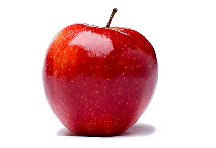

To help low-income families get nutritious food for free or for a lower price and to prevent food from being wasted.
Expiration Stop locates stores or restaurants nearby whose food has reached the "sell by" date. The website displays the food items the stores are getting rid of and navigation routes to the appropriate stores. The information is updated on a daily basis, using the EveryBlock API and the Google Maps API.
Restaurant and grocery store owners click HERE to announce when leftover food is available.
Fruit
Meats

Dairy
Vegetables
Grains
Fats and Oil
Navigate to the food